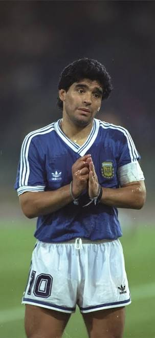

Os Melhores Jogadores de Futebol de Todos os Tempos
1. Pelé (O Rei do Futebol)

Para muitos, o topo pertence e sempre pertencerá a Pelé. O brasileiro revolucionou o esporte com uma combinação inédita de força física, velocidade, inteligência tática e uma capacidade técnica perfeita com as duas pernas. Ele continua sendo o único atleta a conquistar três Copas do Mundo como jogador.
- Era de ouro: Décadas de 1950, 1960 e 1970.
- Maior feito: 3 títulos da Copa do Mundo (1958, 1962, 1970) e mais de 1.000 gols na carreira.
2. Lionel Messi (O Gênio Contemporâneo)

O craque argentino dominou o futebol no século XXI com uma consistência assustadora. Com recordes históricos de Bolas de Ouro e títulos pelo Barcelona, Lionel Messi consolidou de vez seu lugar no monte Olimpo do futebol ao liderar a Argentina na histórica conquista da Copa do Mundo do Catar.
- Era de ouro: Décadas de 2000, 2010 e 2020.
- Maior feito: Recordista absoluto em prêmios de melhor do mundo e campeão da Copa do Mundo (2022).
3. Diego Maradona (O Pibe de Oro)

Mais do que um jogador, Diego Maradona foi um fenômeno cultural e uma religião na Argentina e em Nápoles. Sua genialidade com a perna esquerda e sua capacidade de carregar equipes inteiras nas costas — como na Copa do Mundo de 1986 — o transformaram em um dos atletas mais folclóricos e brilhantes da história.
- Era of ouro: Décadas de 1980 e 1990.
- Maior feito: A atuação individual mais dominante da história das Copas no título de 1986.
4. Cristiano Ronaldo (A Máquina de Gols)
Um dos atletas mais determinados e letais da história do esporte, Cristiano Ronaldo
transformou o futebol moderno com sua força física e obsessão pela vitória.
O craque português empilhou recordes e títulos de Champions League pelo Real Madrid, tornando-se o maior artilheiro em competições oficiais da história do futebol.
1. Pelé (O Rei do Futebol)
Para muitos, o topo pertence e sempre pertencerá a Pelé. O brasileiro revolucionou o esporte com uma combinação inédita de força física, velocidade, inteligência tática e uma capacidade técnica perfeita com as duas pernas. Ele continua sendo o único atleta a conquistar três Copas do Mundo como jogador.
- Era de ouro: Décadas de 1950, 1960 e 1970.
- Maior feito: 3 títulos da Copa do Mundo (1958, 1962, 1970) e mais de 1.000 gols na carreira.
2. Lionel Messi (O Gênio Contemporâneo)
O craque argentino dominou o futebol no século XXI com uma consistência assustadora. Com recordes históricos de Bolas de Ouro e títulos pelo Barcelona, Lionel Messi consolidou de vez seu lugar no monte Olimpo do futebol ao liderar a Argentina na histórica conquista da Copa do Mundo do Catar.
- Era de ouro: Décadas de 2000, 2010 e 2020.
- Maior feito: Recordista absoluto em prêmios de melhor do mundo e campeão da Copa do Mundo (2022).
3. Diego Maradona (O Pibe de Oro)

Mais do que um jogador, Diego Maradona foi um fenômeno cultural e uma religião na Argentina e em Nápoles. Sua genialidade com a perna esquerda e sua capacidade de carregar equipes inteiras nas costas — como na Copa do Mundo de 1986 — o transformaram em um dos atletas mais folclóricos e brilhantes da história.
- Era of ouro: Décadas de 1980 e 1990.
- Maior feito: A atuação individual mais dominante da história das Copas no título de 1986.
4. Cristiano Ronaldo (A Máquina de Gols)
Um dos atletas mais determinados e letais da história do esporte, Cristiano Ronaldo transformou o futebol moderno com sua força física e obsessão pela vitória. O craque português empilhou recordes e títulos de Champions League pelo Real Madrid, tornando-se o maior artilheiro em competições oficiais da história do futebol.